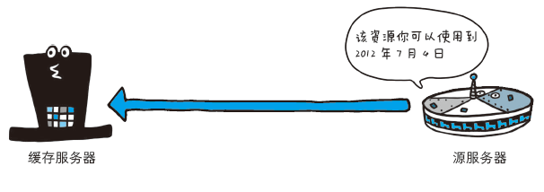

缓存是什么
缓存是指代理服务器或客户端本地磁盘内保存的资源副本。每次访问网页，通常浏览器会从服务器下载所需的资源，例如 HTML 文档、图片、CSS、JavaScript，甚至包括字体文件等。这里面的许多文件（例如图片）都是很少变动的，如果每次都要从服务器重新下载，会不必要地增加网页载入时间，同时也会对服务器造成一定压力。利用缓存可以减少对源服务器的访问，因此也就节省了通信流量和通信时间。
浏览器是否使用缓存、缓存多久，是由服务器控制的。准确来说，当浏览器请求一个网页（或者其他资源）时，服务器发回的响应的「响应头」部分的某些字段指明了有关缓存的关键信息。
Cache-Control
|
|
指令的参数是可选的，多个指令之间通过,分隔。Cache-Control HTTP 响应头是 HTTP 1.1 协议新增的指令，每个资源都可以通过设定 Cache-Control 来建立缓存策略。通常，可为它指定一个max-age，表示缓存的最长时间，单位为秒。例如，若设定Cache-Control: max-age=604800则表示这个资源的有效时间为 7 天。浏览器第一次获取这个资源后，7 天之内若再次请求，通常都不会与服务器进行任何通信，而是直接使用本地副本。
浏览器把文件和附带信息保存起来。当再次需要a.jpg时，如果是在300秒以内发起的请求则直接使用缓存(200, from xx cache)，否则重新发起网络请求(200)。下面是Cache-Control常见的几个值：
- Public表示响应可被任何中间节点缓存，如 Browser <– proxy1 <– proxy2 <– Server，中间的proxy可以缓存资源，比如下次再请求同一资源proxy1直接把自己缓存的东西给 Browser 而不再向proxy2要。
- Private表示中间节点不允许缓存，对于Browser <– proxy1 <– proxy2 <– Server，proxy 会老老实实把Server 返回的数据发送给proxy1,自己不缓存任何数据。当下次Browser再次请求时proxy会做好请求转发而不是自作主张给自己缓存的数据。
- no-cache表示不使用 Cache-Control的缓存控制方式做前置验证，而是使用 Etag 或者Last-Modified字段来控制缓存
- no-store ，真正的不缓存任何东西。浏览器会直接向服务器请求原始文件，并且请求中不附带 Etag 参数(服务器认为是新请求)。
- max-age，表示当前资源的有效时间，单位为秒。
优点：缓存控制功能更强大
缺点：假如浏览器再次请求资源a.jpg的时间间隔超过了max-age，这时候向服务器发送请求服务器应该会重新返回a.jpg的完整文件。但如果 a.jpg 在服务器上未做任何修改，发送a.jpg的完整文件就太浪费带宽了，其实只要发送一个「a.jpg未被更改」的短消息标示就好了。
Expires

Expires响应头从另一个角度——指明缓存的具体过期日期，来控制资源何时过期。在过期时间以内，若再次发起请求，通常浏览器都不会与服务器进行任何通信，而是直接使用本地副本。
当 Expires 和 Cache-Control 同时出现时，通常后者会覆盖前者的设定。由于 Expires 对用户的系统时间有所依赖，因此通常认为使用Cache-Control是更好的选择（基本上所有的浏览器都支持 Cache-Control 指令）。
ETag与Last-Modified
服务器可在HTTP返回头中包含Last-Modified字段或者ETag字段。Last-Modified 表示被请求资源在服务器端的上次修改时间，而ETag 则是一个唯一文件标识符，每次文件修改后都会生成一个新的 ETag。服务器通过向浏览器发送这两个字段，来告知浏览器其获得的资源的版本。
ETag
- 服务器使用 ETag HTTP 标头传递验证令牌。
- 验证令牌可实现高效的资源更新检查：资源未发生变化时不会传送任何数据。
比如：浏览器第一次请求a.jpg 时，服务器会发送完整的文件并附带额外信息，其中Etag 是 对a.jpg文件的编码，如果a.jpg在服务端未被修改，这个值就不会变
浏览器把a.jpg和额外信息保存到本地。假如浏览器在300秒以内再次需要获取a.jpg时，浏览器直接从缓存读取a.jpg(200, from xx cache)。假如浏览器在300秒之后再次需要获取a.jpg时，浏览器发现该缓存的文件已经不新鲜了，于是就向服务器发送请求 重新获取a.jpg, 在发送请求的时候附带刚刚保存的a.jpg的ETag ( If-None-Match：W/"e-cbxLFQW5zapn79tQwb/g6Q")。 服务器在接收到请求后拿浏览器请求的Etag和当前文件重新计算后端 Etag做个比较，如果二者相等表示文件在未修改则发送个短消息（响应头，不包含图片内容, 304），如果二者不等则发送新文件和新的ETag，浏览器获取新文件并更新该文件的 Etag。
Last-Modified
与 ETag 类似功能的是Last-Modified/If-Modified-Since。当资源过期时（max-age超时），发现资源具有Last-Modified声明，则再次向web服务器请求时带上头If-Modified-Since，表示请求时间。web服务器收到请求后发现有头If-Modified-Since 则与被请求资源的最后修改时间进行比对。若最后修改时间较新，说明资源又被改动过，则响应整片资源内容（200）；若最后修改时间较旧，说明资源无新修改，则响应HTTP 304告知浏览器继续使用所保存的cache。
小结
由于 Last-Modified 和ETag的作用是相同的（均为向服务器验证资源是否最新），因此只使用一个即可。通常认为Last-Modified 更好（它和Expires 不同，由服务器生成，不依赖浏览器端时间）。